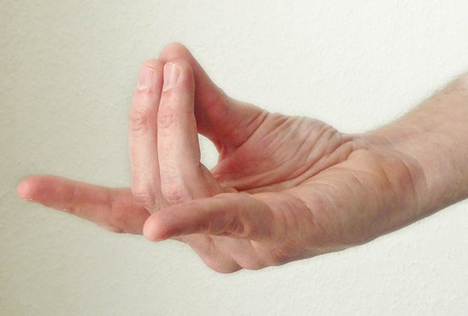

APAN MUDRA
(Mudra of Digestion)
This Mudra gives rise to the root chakra reducing tension and depression. This pose is quite calming and spiritually awakening. It stimulates the air element in the body, which ultimately leads to an increase in the memory power, nervous system and pituitary gland production. It increases the level of concentration, builds mental power and sharpens the brain. If done regularly, your mental and psychological disorders such as anger, stress, anxiety depression and even insomnia can be improved considerably.
VARUN MUDRA
(Mudra of Water)
This particular Mudra reduces the air element of the body which controls the restlessness, nervousness, and calms an uneasy mind. It controls the Vata dosha and helps with Arthritis, gas problems, Sciatica, Gout, knee pain or bulging stomach; relaxes the muscles, overcharged endocrine glands, soothes strained voice and with many other problems. It also harmonizes our natural body energies, such as blinking, sneezing or yawning.
LING MUDRA
(Mudra of Heat)
Prana Mudra symbolizes energy or spirit of life. It provides energy and health. It improves eyesight, increases the body resistance to diseases, reduces deficiency of vitamins, and removes tiredness. Additionally, it reduces hunger pangs during fasting and gives you a good night’s sleep. It also stimulates the entire human body, energizes it and puts the internal organs in motion.
SURYA MUDRA
(Mudra of the Sun)
It is a Mudra of emptiness or heaven, which reduces the space element in the body. One hour of this Mudra, if done regularly, can reduce ear pain and watering of the eyes. It improves hearing, strengthens the bones, reduces heart diseases and throat problems. It heals thyroid diseases and fortifies the gums. It also opens the heart chakra and helps in meditation.